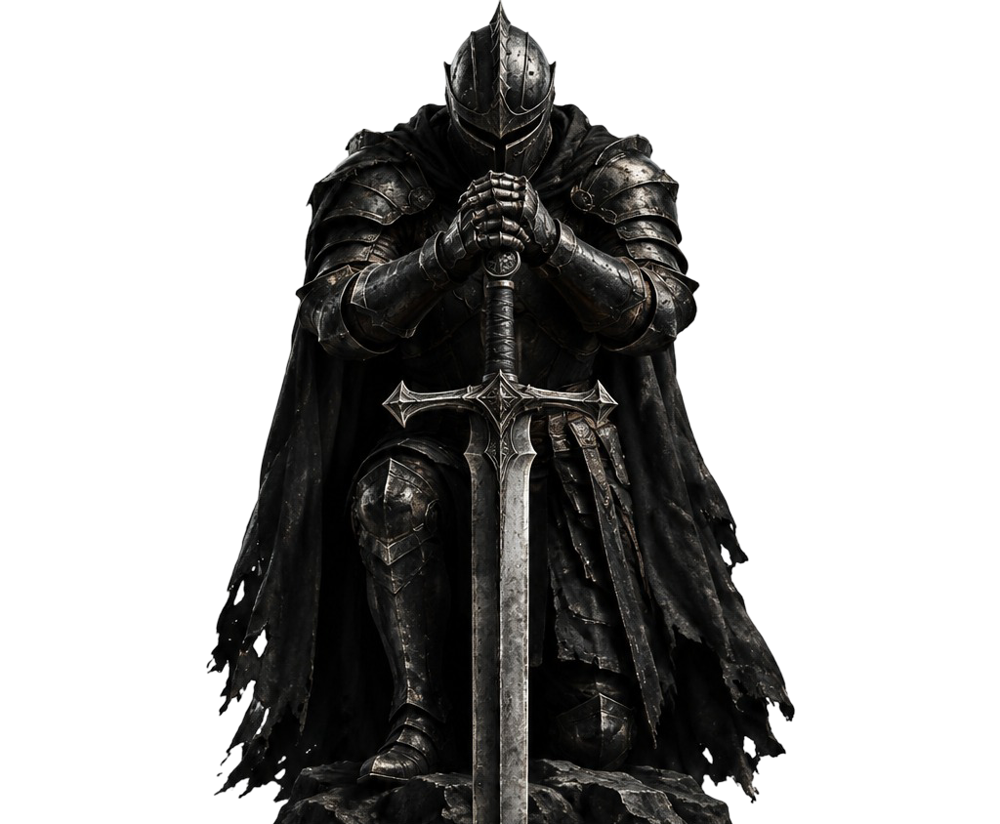
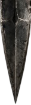

DARK FANTASY CINEMATICS·UNREAL ENGINE 5·GEN AI PIPELINES

SCROLL TO FORGE↓

DISCIPLINE 01 // DIRECTION2024 — 2026 ARCHIVE
Cinematic Showreels
High-octane visual pacing, camera choreography, and dramatic chiaroscuro color grading crafted for dark fantasy narratives, period epics, and feature-film launch campaigns.
Introduction to Video Games Creation and seamless real-time engine integration. Directing custom in-engine virtual camera rigs, Lumen dynamic global illumination, and procedural Niagara volumetric simulations for high-immersion player narratives.
Gen AI pipeline mastery bridging generative diffusion models, neural radiance fields (NeRFs), and traditional 32-bit floating point Nuke compositing for photorealistic dark fantasy world-building.